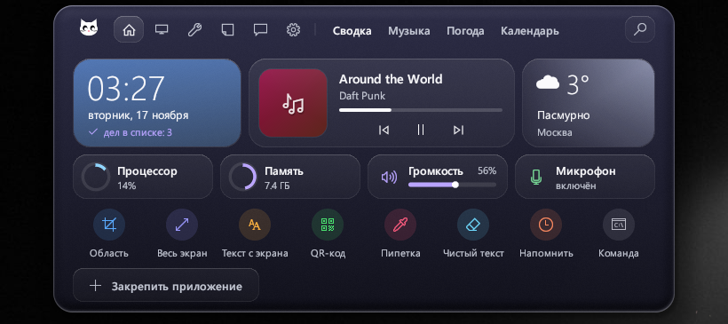
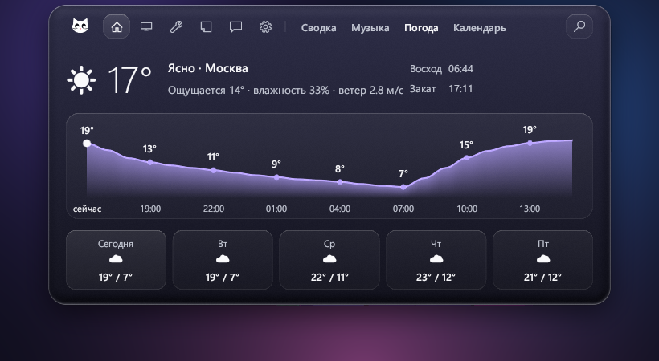
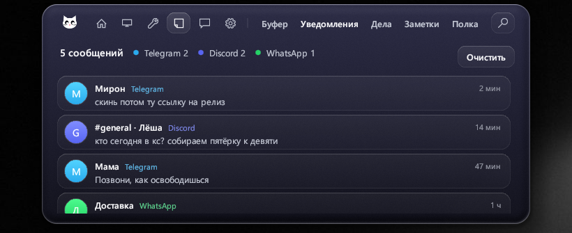
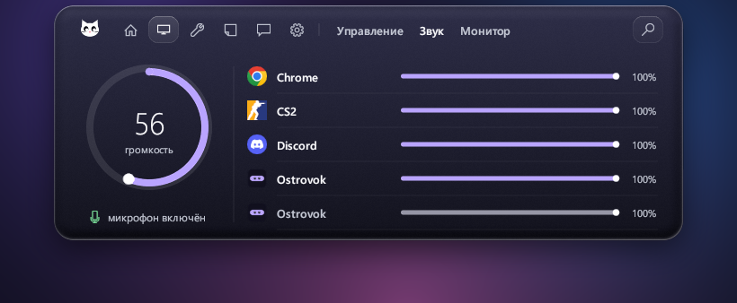
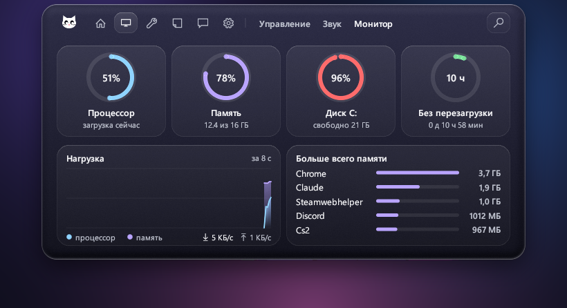
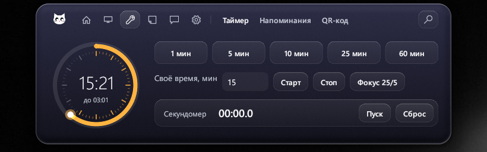
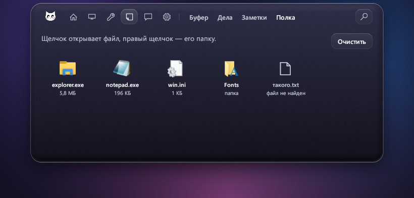
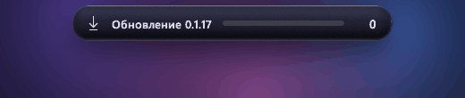

Маленькая пилюля наверху экрана с часами, погодой и музыкой. Наведёте курсор — раскроется в панель со всем, что нужно под рукой.
Бесплатно, открытый код, один файл. Права администратора не нужны, обновляется сам.

Не нужно держать открытыми плеер, погоду, заметки и диспетчер задач. Остров показывает главное и прячется, когда не нужен.
Что играет, управление, текст песни. Эквалайзер показывает настоящий звук компьютера.
График температуры, осадки, восход и закат. В пилюле идёт дождь, если он идёт за окном.
Сообщения из Telegram, Discord и WhatsApp всплывают в пилюле, пропущенные собираются в список.
История копирования с поиском и булавками. Скопировали ссылку, цвет или пример — остров предложит действие.
Таймер, секундомер, режим 25/5, напоминания и список дел с календарём.
Громкость каждой программы, микрофон, нагрузка, сеть и память. Громкость и раскладка всплывают в пилюле.
Снимок области, распознавание текста с картинки, пипетка цвета, QR-коды.
Alt + Пробел: программы, сайты, примеры, «5 км в мили», «100 usd в рубли».
Почасовой прогноз с графиком, вероятность осадков и пять дней вперёд. В пилюле — живая погода: капли, снег или солнце.

Пропущенные сообщения мессенджеров собираются в аккуратный список. Хранятся только в памяти и исчезают при перезапуске.

Браузер тише, игра громче — колесом мыши, не открывая микшер Windows.

График нагрузки, сеть и программы, которые занимают больше всего памяти.

Таймер, секундомер и режим «Фокус 25/5», который сам чередует работу и перерыв.

Перетащите файл на остров — он подождёт на полке, пока не понадобится.

Новая версия скачивается в фоне. Остров заполняется, капля улетает вверх и возвращается обновлённым. Во время полноэкранной игры обновление подождёт.

Наружу идут только запросы, которые вы сами включили. Звук и речь обрабатываются на компьютере.
Скачайте, запустите и нажмите «Установить» в настройках — остров появится в меню «Пуск».
Защитник Windows может ошибочно назвать новый неподписанный файл подозрительным — код открыт, его можно проверить и собрать самому.